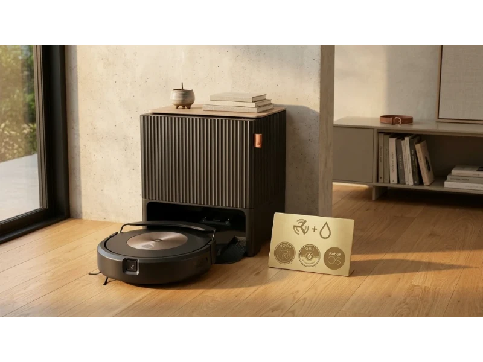
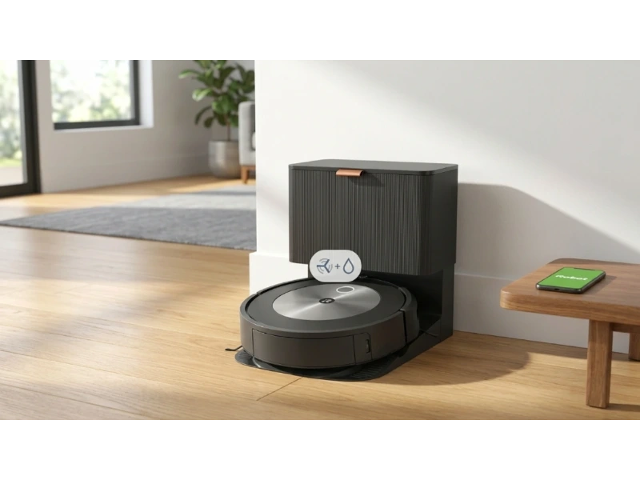
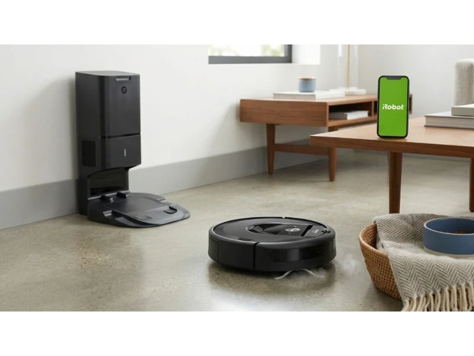
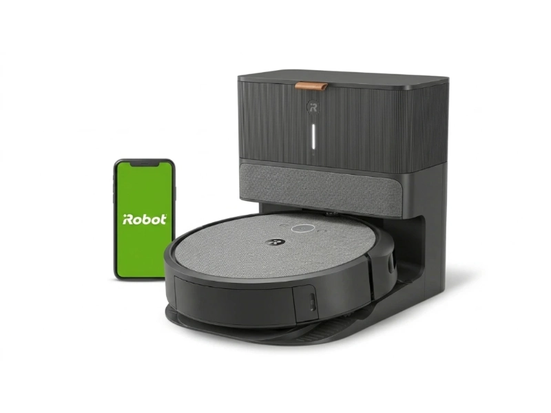

Pet hair gets everywhere. It hides in carpets, sticks to couches, and collects in corners you didn't even notice. If you have one pet, it's manageable. But with multiple pets, it can feel like a full-time job.
That's where a Roomba can help. But not every model handles pet hair the same way. Some clog with long fur. Others miss hair buried deep in carpets. And a few simply don't keep up with daily shedding.
Choosing the right Roomba is not about features alone. It's about how well it performs in real homes with real pets. This guide breaks down the top Roomba models for pet hair based on real user data, search intent, and tested performance — so you can see what actually works, what doesn't, and which model fits your situation.
Top 5 Best Roomba for Pet Hair
Finding the right Roomba depends on your home, pets, and cleaning habits. Some models focus on deep carpet cleaning. Others solve daily maintenance with automation. Below are the five models that consistently stand out for pet owners in 2026.
- Roomba Combo 10 Max — Best for Multi-Pet Homes
- Roomba j9+ — Best for Reliable Smart Cleaning
- Roomba j7+ — Best Value Self-Emptying Option
- Roomba i7+ — Best for Multi-Floor Homes
- Roomba i3+ EVO — Best Budget Pick for Pet Hair
Now let's take a closer look at these models.
1. Roomba Combo 10 Max — Best for Multi-Pet Homes
The Roomba Combo 10 Max is designed for homes with multiple pets and heavy shedding. It combines vacuuming and mopping with a fully automated dock that washes and dries mop pads, reducing odor and daily maintenance. If you have multiple pets dealing with constant hair, muddy paws, or wet messes, this model targets those exact problems.
Key Specs
Testing shows a 95% pickup rate on high-pile carpets. That matters because pet hair often gets trapped deep in fibers. Many robot vacuums struggle here, but this one performs closer to a full-size vacuum. It also handles long hair well — consistent pickup without tangling is critical for shedding breeds like Golden Retrievers or long-haired cats.
The AutoWash Dock is the standout feature. It's the first of its kind from iRobot, solving a very real issue: wet mop pads that start to smell like dogs. The dock washes and dries the mop pads automatically, so there's no need to handle dirty, damp cloths. Users upgrading from older j-series models often mention this as the main reason they switched — that one feature alone reduces maintenance more than any suction upgrade.
The biggest complaint is noise during self-emptying. At 65dB or higher, it's loud enough to interrupt conversations or wake pets. It also sits at the premium end of the price range, so it only makes sense if you'll actually use both vacuum and mop features regularly.
- 95% pickup rate on high-pile carpets — closest to a full-size vacuum
- AutoWash Dock washes and dries mop pads automatically
- Eliminates one of the last manual maintenance tasks
- Handles long fur from heavy shedding breeds without tangling
- Loud self-emptying noise (~65 dB)
- Premium price — only worth it if mopping is used regularly

2. Roomba j9+ — Best for Reliable Smart Cleaning
The Roomba j9+ focuses on reliability, especially in homes with pets that create unpredictable messes. It combines strong suction with smart detection features, making it a trusted option for pet owners who want consistent results without worrying about accidents, tangles, or constant maintenance.
Key Specs
The j9+ performs well on carpets, especially where hair gets embedded. It also adapts cleaning based on dirt levels, which helps in high-traffic areas like pet beds or entryways. The Dirt Detective feature learns which rooms get dirty fastest and prioritizes them automatically — so if your dog sleeps in one room or tracks mud into another, the Roomba adjusts without manual input.
The dual rubber brush system is often mentioned in reviews because it doesn't tangle like traditional bristle brushes. Pet owners know the struggle of cutting hair out of brushes every week. With this system, that problem almost disappears.
The P.O.O.P. guarantee is a real reason people choose this model after bad experiences with other robot vacuums. Many users switch to the j9+ specifically after one incident where another robot ran over pet waste and spread the mess across the floor. The combo version adds mopping, but many users still prefer the standard vacuum-only model for simplicity — it avoids extra maintenance while still delivering strong cleaning performance.
- Dirt Detective automatically prioritizes dirtier rooms
- Dual rubber brushes eliminate hair tangling almost entirely
- P.O.O.P. guarantee provides real protection against pet accidents
- Strong deep-carpet cleaning performance
- Higher price than j7+ and i-series
- Combo version adds mopping maintenance

3. Roomba j7+ — Best Value Self-Emptying Option
The Roomba j7+ is known as a reliable, no-nonsense option for pet owners. It doesn't have the newest features, but it consistently handles pet hair well and remains widely used because of its price and performance balance. For pet owners who want solid, proven performance without paying premium prices, this remains one of the strongest choices available.
Key Specs
Search interest around "Is Roomba j7+ still good in 2026?" remains high — and for good reason. It's often discounted below $400, making it one of the most accessible self-emptying robot vacuums with strong pet hair performance.
One key advantage is its slim design. Compared to newer models like the j9+ or Combo 10 Max, it fits more easily under low-profile furniture. If your pets shed under couches or beds, this becomes a big deal — many robot vacuums simply can't reach those areas.
Replacement bags and filters are widely available, including cheaper third-party options. For long-term use, this lowers the overall cost significantly. And for pet owners, that matters because filters and bags need frequent replacement. It handles daily cleaning reliably, avoids obstacles well, and doesn't require constant attention. It may not have the latest features, but it covers the basics extremely well — and for many users, that's enough.
- Often under $400 — best price-to-performance ratio in the lineup
- Slim profile reaches under low furniture where pets shed
- Affordable third-party replacement bags and filters available
- Proven, reliable daily cleaning without constant attention
- Fewer new features compared to j9+ and Combo 10 Max
- No mopping capability

4. Roomba i7+ — Best for Multi-Floor Homes
The Roomba i7+ is built for consistency across multiple floors. It may not be the newest model, but it still holds strong appeal for users who need reliable mapping and steady pet hair performance across different home layouts. If your pets move freely between floors, this becomes a practical advantage that newer mid-range models often can't match.
Key Specs
The i7+ supports up to 10 unique floor maps — more than many newer mid-range models, which often limit how many layouts they can store. So if you have an upstairs bedroom, downstairs living room, and a basement, this model keeps everything organized without needing resets between floors.
It uses the AeroForce 3-Stage Cleaning System, which focuses on lifting embedded hair from carpets. This matters most for low-pile carpets where pet hair tends to get stuck deep rather than sitting on the surface. Users often notice better results here compared to entry-level models.
There is also a subtle but important reason some users still choose the i7+. It uses vSLAM navigation with a top-mounted camera, instead of front-facing cameras found in newer models. For users concerned about privacy, this design feels less intrusive while still delivering accurate mapping. It maps well, cleans consistently, and doesn't introduce unnecessary complexity.
- Stores up to 10 floor maps — ideal for multi-level homes
- AeroForce 3-Stage System lifts embedded hair from low-pile carpet
- Top-mounted camera navigation for privacy-conscious users
- Consistent, predictable mapping across different layouts
- Older technology compared to j-series models
- No mopping capability

5. Roomba i3+ EVO — Best Budget Pick for Pet Hair
The Roomba i3+ EVO focuses on affordability without removing the features pet owners actually need. After its EVO software update, it gained smart mapping and structured cleaning, making it far more capable than earlier versions. It is especially useful for homes with shedding dogs where daily cleaning matters more than advanced automation.
Key Specs
Before the EVO update, this model cleaned in a random pattern. Now it uses "Neat Rows," which makes cleaning more predictable and complete. That change alone increased its value — users noticed better coverage and fewer missed spots, especially in open living areas where pet hair spreads quickly.
It uses the same Dual Multi-Surface Rubber Brushes found in higher-end models. That means pet hair doesn't wrap around the brushes, even with long fur. For shedding breeds, this reduces one of the biggest maintenance headaches without paying flagship prices.
Interest in this model increased after users realized it uses the same bags and filters as models that cost much more. So even though the upfront price is lower, you're not sacrificing core cleaning hardware. The biggest trade-off is the lack of Keep Out Zones — it may bump into water bowls or pet feeding areas unless you physically block them. It also doesn't have the advanced obstacle detection of the j-series.
- Lowest price with self-emptying capability in the Roomba lineup
- Same dual rubber brushes as premium models — no hair tangling
- EVO update added smart "Neat Rows" structured cleaning
- Uses same bags and filters as much more expensive models
- No Keep Out Zones — may bump into pet bowls or feeding areas
- No advanced obstacle detection like the j-series
How to Choose the Best Roomba for Pet Hair
Choosing the right model is less about specs and more about how you live with your pets. The wrong choice often leads to frustration, even if the vacuum itself is good.
Match the Vacuum to Your Pet Type
Long-haired pets create different problems than short-haired ones. If your dog sheds long fur, you need strong suction and tangle-free brushes — models like the Combo 10 Max or j9+ handle this better. For short-haired pets, consistency matters more than raw power. Even the i3+ EVO can keep up with daily cleaning from shorter coats.
Consider Your Home Layout
A small apartment doesn't need advanced mapping. But a multi-floor house does. If your pets move across different levels, the i7+ becomes a practical choice because it remembers up to 10 unique maps. For single-floor homes, newer models with smarter navigation like the j9+ feel more efficient and prioritize dirty areas automatically.
Think About Daily Maintenance
This is where most people underestimate their needs. Do you want to clean mop pads manually? Untangle brushes every week? Empty bins daily? If the answer is no, automation matters more than anything else. That's why the AutoWash Dock in the Combo 10 Max drives so many upgrades — it removes one of the last remaining manual tasks.
Budget vs Long-Term Cost
A cheaper model is not always cheaper over time. The j7+ stands out because it supports affordable replacement parts, lowering ongoing costs. The i3+ EVO goes even further by sharing parts with premium models while costing much less upfront. Instead of looking only at price, think about how much you'll spend on consumables over the next year.
Avoid Features You Won't Use
It's easy to get drawn to extra features like mopping or AI detection. But if your main problem is pet hair, focus on suction, brush design, and cleaning consistency. Many users who buy combo models end up using only the vacuum function. Keep your actual use case clear before deciding.
Roomba vs Other Robot Vacuums for Pet Hair
Brush Design Matters More Than Suction
Most robot vacuums today offer strong suction on paper. But suction alone doesn't solve pet hair problems. Roomba's dual rubber brushes are a key advantage — they don't use bristles, so hair doesn't wrap around them easily. This reduces the need to cut tangled hair every few days. Other brands often rely on bristle brushes, which can pick up fine dust well but wrap long pet hair quickly.
Handling Real-Life Pet Accidents
The j-series models, especially the j9+, are built with obstacle detection that avoids pet waste. This is not just a feature — it's a safeguard against one of the worst cleaning scenarios. Many users switch to Roomba after a bad experience with another robot vacuum spreading a mess across the floor. The trust factor around this feature is genuinely high.
Navigation and Cleaning Behavior
Other brands often move faster and cover space quickly. But Roomba focuses more on methodical cleaning. With features like Dirt Detective, Roomba prioritizes dirtier areas automatically — useful in homes where pets create uneven mess patterns like a mudroom or a pet sleeping area that gets more attention without manual setup.
Where Other Brands May Do Better
Some competitors offer quieter operation or slightly better mopping systems at lower prices. But when it comes to long-term maintenance and handling pet hair without constant intervention, Roomba still holds a strong position — particularly around brush design and pet-accident avoidance.
Comparison: Top Roombas for Pet Hair Side by Side
| Model | Best For | Pet Hair Performance | Mapping | Self-Empty | Key Limitation |
|---|---|---|---|---|---|
| Roomba Combo 10 Max | Multi-pet homes | Excellent (95% carpets) | Advanced | Yes + AutoWash | Loud self-empty |
| Roomba j9+ | Reliable smart cleaning | Excellent | Smart + Dirt Detective | Yes | Higher price |
| Roomba j7+ | Value option | Very Good | Smart | Yes | Fewer new features |
| Roomba i7+ | Multi-floor homes | Very Good (carpet focus) | Up to 10 maps | Yes | Older tech |
| Roomba i3+ EVO | Budget users | Good | Smart (EVO update) | Yes | No keep-out zones |
Frequently Asked Questions
Which Roomba is best for long pet hair?
Models with dual rubber brushes like the j9+ and Combo 10 Max handle long hair better. They prevent tangling and reduce maintenance, which is important for heavy shedding breeds like Golden Retrievers or long-haired cats.
Is a self-emptying Roomba worth it for pet owners?
Yes, especially if your pets shed daily. A self-emptying system reduces how often you need to interact with the vacuum, making it easier to maintain a clean home consistently without emptying the bin after every cleaning cycle.
Do Roombas work well on carpets with pet hair?
Yes, but performance varies. Models like the Combo 10 Max and j9+ perform better on carpets because they can lift embedded hair more effectively. The i3+ EVO handles surface-level hair well but is less effective on high-pile or deeply embedded fur.
What is the most affordable Roomba for pet hair?
The i3+ EVO is one of the most affordable options with self-emptying capability. It offers strong value especially after its smart mapping update, and it shares parts with much more expensive models — keeping long-term costs low.
Do I need a Roomba with mopping for pets?
Not always. If your main issue is pet hair, a vacuum-only model is often enough. Mopping helps with muddy paws or sticky messes, but it adds extra maintenance unless you have an automated system like the AutoWash Dock on the Combo 10 Max.
Final Verdict
Choosing the right Roomba depends on how much pet hair you deal with and how much effort you want to put into cleaning.
If you want the most automation and least maintenance, the Combo 10 Max stands out — the self-washing mop system solves a problem most robot vacuums ignore. If reliability matters most, the j9+ offers strong performance with features that actually protect your home from common pet-related issues. For value-focused buyers, the j7+ and i3+ EVO remain practical choices that handle daily pet hair without unnecessary complexity or cost. And if your home has multiple floors, the i7+ still offers one of the most stable mapping systems available.
There is no single perfect model for everyone. But the right choice is the one that fits your pet, your home, and your daily routine.